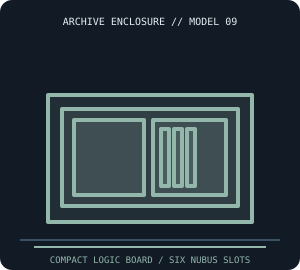

[ IDENTIFIED SYSTEM // APPLE MACINTOSH IICX ]
Apple Macintosh IIcx Compact Desktop Enclosure
Compact horizontal desktop with separate display; reported outer dimensions are about 14.4 × 10.9 × 6.0 in (W × D × H).

MODEL / REVISION BOUNDARY: Identify Model M5650 and logic-board revision. Do not assume Macintosh II/IIx PSU, case or drive carrier interchangeability merely because NuBus cards share a standard.
Enclosure specifications
| Exact model / generation | Apple Macintosh IIcx (Model M5650, 1989); original compact six-slot system, not Macintosh II/IIx/IIci. |
|---|---|
| External dimensions | About 14.4 × 10.9 × 6.0 in (W × D × H) for the system unit, reported; measure feet, case handle/cover and rear clearance on the actual specimen. |
| Form factor / board layout | Compact horizontal desktop with a proprietary internal logic-board/NuBus cage arrangement; separate monitor, Apple-specific case and fan/airflow path. |
| Proprietary power supply | Internal proprietary Apple IIcx power supply, fan and harness; not an ATX replacement. Correct output connectors and airflow are model-specific. |
| External bays / ports | No standard external drive bays. Rear slot openings and I/O ports do not constitute drive bays. |
| Internal bays / mounts | One 3.5-inch floppy mechanism and internal hard-drive carrier position in typical builds; carrier and installed drive options vary by configuration. |
| Service / compatibility | Use Macintosh IIcx Service Source and Apple hardware reference. Keep supply/fan, logic board, internal cabling and shields matched; service CRT only if a separate display is disconnected and handled properly. |
| Revision identification | Identify Model M5650 and logic-board revision. Do not assume Macintosh II/IIx PSU, case or drive carrier interchangeability merely because NuBus cards share a standard. |
Service, restoration & fit notes
Use Macintosh IIcx Service Source and Apple hardware reference. Keep supply/fan, logic board, internal cabling and shields matched; service CRT only if a separate display is disconnected and handled properly.
Internal proprietary Apple IIcx power supply, fan and harness; not an ATX replacement. Correct output connectors and airflow are model-specific.
- Record the full model/type label, board and power-supply assembly numbers, drive labels and manual revision before disassembly.
- Preserve original shields, brackets, hinges, feet, keyboard/CRT harnesses and proprietary fasteners with this exact enclosure; do not assume contemporary PC standards apply.
- Dimensions are approximate where noted; measure the actual specimen and leave clearance for cables, vents, lids/handles and attached peripherals.
Manufacturer & archival manual citations
- Apple Service Source v1.2 (Aug. 1992), including IIcx service materials — Internet ArchiveArchival Service Source disc containing Macintosh IIcx service documentation; consult its exact model document and revision.
- Apple Service Technical Procedures, Macintosh Family, Volume Two (1991) — Internet ArchiveApple-published service procedures for Macintosh family systems; cross-check exact model coverage.
Manuals may cover only a stated revision or configuration; compare the title page and machine labels before applying procedures.